ZES Unica — Analisi delle autorizzazioni
Paolo Volterra ![]()
Analisi delle autorizzazioni ZES Unica (Zone Economica Speciale del Mezzogiorno) a partire dalle tabelle pubbliche. Vengono esaminati: KPI di sintesi, trend mensile cumulativo, modello di coda M/M/1, distribuzione regionale, tipo di intervento, pipeline/lag di lavorazione, backlog stimato, profilo finanziario, incrocio con il Fondo di Garanzia, lettura critica e favorevole dell’esperienza ZES Unica.
Parole chiave
ZES, Mezzogiorno, autorizzazioni, credito d’imposta, pipeline, FdG
Il Piano strategico per la ZES unica, disciplinato dall’art. 11 del D. L. 124/ 2023, definisce la politica di sviluppo della ZES unica al fine di rafforzare il tessuto produttivo del Mezzogiorno e stimolarne il posizionamento nelle filiere nazionali ed europee e all’interno delle catene globali del valore.
Il Piano:
individua le filiere strategiche da rafforzare (9 sulle 27 Istat), valorizzando le vocazioni produttive regionali
individua tre tipologie di tecnologie da promuovere per lo sviluppo di un’industria competitiva
elenca un’ampia gamma di agevolazioni per le imprese che operano nel Mezzogiorno
prevede la valutazione degli impatti (cap.3.1) , ipotizzando l’utilizzo della Territorial Impact Assessment #TIA
Auspicandomi la possibilità di leggere questo documento, provo a fare delle analisi in base alle tabelle che vengono pubblicate sul sito istituzionale
Nell’analisi lascio momentaneamente l’anomalia rappresentata dalla posizione 100 del 2026: si tratta di Marcianise (FC) invece di Marcianise (CE). Un’anomalia al pari di “Trapani (TR), riga 331/2024, righe 16,74 e 75/2025” non ancora sanate ma utili per ricordarsi che a monte c’è una reportistica manuale (foglio xls senza ripetizione degli header per pagina e numero pagina) e non un’estrazione da sistemi.
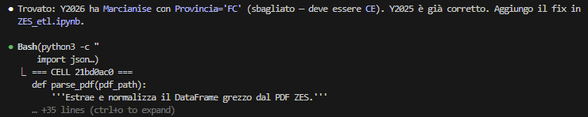
Così come la mancanza di alcuni CF nell’“ID pratica”, non credo dovuti a riservatezza
L’analisi si basa sulla sua decodifica: la sequenza di CF-data IN-numero pratica. Una delle conseguenze è che che la “data protocollo” rappresenti l’ OUT e quindi la differenza fra le due sia il tempo di lavorazione.
Questo, in carenza di note metodologiche ufficiali che non sono riuscito a trovare.
Un altro MEMO: nel 2025 manca il numero AU 290
Y2024: sequenza 1–335, nessun gap
Y2025: sequenza 1–594, manca il 290
Y2026: sequenza 1–107, nessun gap
Le autorizzazioni riportate sui PDF sono quindi 335+594-1+107=1035
Lo studio fa riferimento anche al cd “contatore” (istanze di AU e comunicazioni preventive). Riporto qui il link ultimo raggiungibile.
Per le anomalie sui CF, vedere il punto 1.9
Tralasciando il costo di questa misura #PNRR , questi peccati veniali fanno più propendere per una lettura di cui al punto 1.12 …
1.1 KPI di sintesi
Autorizzazioni totali 1035
Aziende uniche (CF) 837
Comuni coinvolti 282
Regioni 9
Prima AU 2024-06-12
Ultima AU 2026-02-25
Copertura IMPRESA 78.4%1.2 Trend mensile cumulativo e previsione
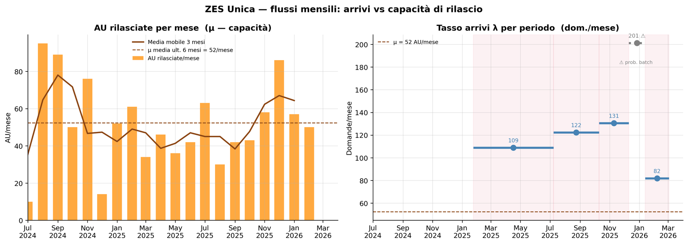
Tassi arrivo per periodo (dom./mese):
2025-01-24 → 2025-07-08: 109/mese
2025-07-08 → 2025-10-10: 122/mese
2025-10-10 → 2025-12-10: 131/mese
2025-12-10 → 2026-01-13: 201/mese ← prob. batch
2026-01-13 → 2026-03-03: 82/mese
μ media ultimi 6 mesi: 52 AU/meseIl pannello sinistro mostra il flusso effettivo di autorizzazioni rilasciate mese per mese (μ), con la media mobile a tre mesi che smootha la variabilità stagionale. Il pannello destro rappresenta i tassi di arrivo stimati per ciascun intervallo di osservazione del contatore ufficiale (λ), con il punto dicembre–gennaio segnalato come probabile aggiornamento a batch. La linea tratteggiata indica la capacità media degli ultimi sei mesi. Nei primi periodi λ supera stabilmente μ, il che spiega la formazione del backlog. Nell’ultimo intervallo (gennaio–marzo 2026) i due tassi si avvicinano, suggerendo una possibile convergenza verso l’equilibrio.
Va però considerato che il contatore mescola autorizzazioni e comunicazioni preventive: la λ effettiva delle sole AU è quasi certamente inferiore a quella osservata, rendendo la convergenza ancor più plausibile. La qualità dei dati di input rimane il limite principale di questa stima.
── Stima M/M/1 ─────────────────────────────────────────
μ (capacità, ult. 6 mesi) : 52.3 AU/mese
Lag mediano osservato : 173 gg (5.7 mesi)
ρ implicita dal lag : 0.997
λ implicita (dom. AU/mese) : 52.1
λ ρ E[N] E[T] mesi E[T] gg stabile
-------------------------------------------------------
60 1.148 ∞ ∞ inf NO ⚠
65 1.243 ∞ ∞ inf NO ⚠
70 1.339 ∞ ∞ inf NO ⚠
75 1.434 ∞ ∞ inf NO ⚠
80 1.530 ∞ ∞ inf NO ⚠
85 1.626 ∞ ∞ inf NO ⚠
90 1.721 ∞ ∞ inf NO ⚠
100 1.913 ∞ ∞ inf NO ⚠
110 2.104 ∞ ∞ inf NO ⚠
122 2.333 ∞ ∞ inf NO ⚠
→ Con μ=52 AU/mese, il sistema è stabile solo se λ < 52
→ Dal lag mediano si stima λ ≈ 52 AU/mese (ρ ≈ 0.997)
NOTA: λ qui è il tasso di domande che diventano AU, ≤ domande totali del contatore.
Il contatore include anche comunicazioni preventive → λ_AU < λ_contatore.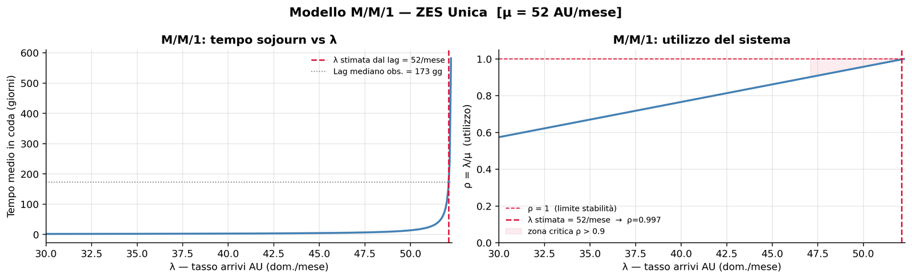
Il modello M/M/1 — coda con arrivi poissoniani e servizio esponenziale — offre un riferimento teorico per interpretare la dinamica delle pratiche ZES. Il parametro chiave è ρ = λ/μ: quando ρ si avvicina a 1, il tempo medio di attesa esplode in modo non lineare (curva sinistra). Lavorando a ritroso dal lag mediano osservato di 173 giorni, si stima una λ implicita molto prossima a μ, ovvero ρ ≈ 1.
Questo ha un’implicazione di politica economica rilevante: se il sistema opera a saturazione, il collo di bottiglia non è la domanda di investimenti ma la capacità amministrativa di istruzione delle pratiche.
In altri termini, la ZES non è demand-constrained ma capacity-constrained. Incrementare la comunicazione dello strumento senza aumentare proporzionalmente la capacità istruttoria non ridurrebbe i tempi di attesa; al contrario, li allungherebbe ulteriormente. Il modello rimane uno strumento di benchmark: il sistema non è in steady state (il backlog si è formato progressivamente), ma le formule M/M/1 indicano la direzione corretta della politica di intervento.
1.3 AU mensili per anno
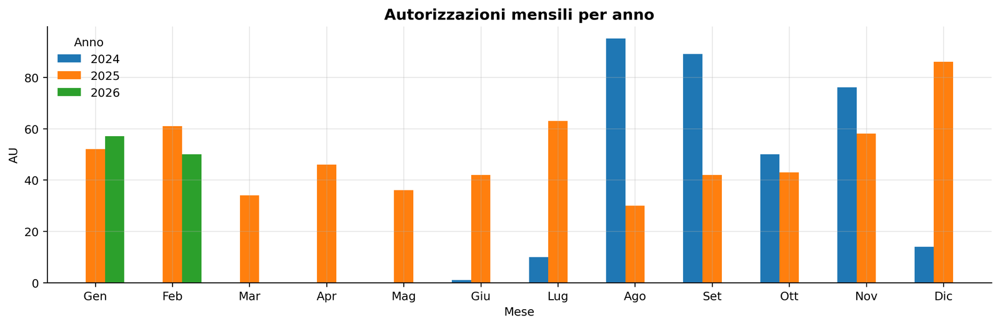
Il confronto mensile per anno rivela due fasi distinte. Nel 2024 il rilascio di autorizzazioni è concentrato nel secondo semestre, con un picco iniziale riconducibile alle domande già pronte all’apertura dello sportello ZES Unica (luglio 2024): si tratta di un “boost da coorte” che non riflette il tasso ordinario di istruzione.
Dal 2025 il flusso si stabilizza su ritmi più costanti, pur con variabilità mensile.
Il 2026 è ancora parziale (dati fino a febbraio). La lettura comparativa suggerisce che la capacità istruttoria si è assestata su circa 60–80 AU/mese nel regime ordinario, con punte occasionali. Questa evidenza è coerente con l’ipotesi di un sistema capacity-constrained: il ritmo di uscita dipende più dalle risorse amministrative disponibili che dalla pressione della domanda.
1.4 Distribuzione per regione
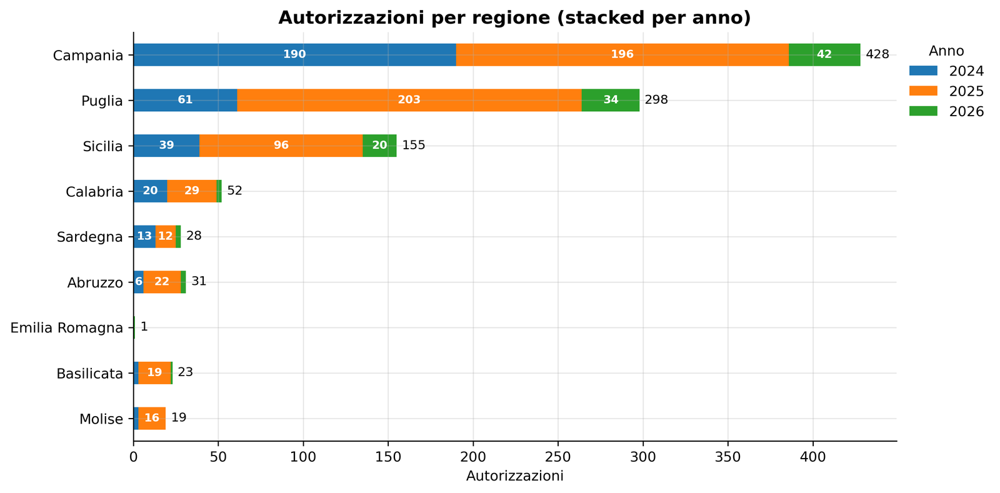
La Campania si conferma la regione dominante per volume di autorizzazioni, seguita da Puglia e Sicilia. La concentrazione riflette sia il peso demografico e produttivo di queste regioni sia una maggiore familiarità delle imprese locali con gli strumenti agevolativi. Le regioni più piccole — Molise, Basilicata — mostrano numeri assoluti contenuti ma non necessariamente un minore interesse relativo: occorrerebbe normalizzare per il tessuto produttivo locale. La distribuzione per anno evidenzia come in tutte le regioni il 2025 abbia superato il 2024 in termini di autorizzazioni rilasciate, coerentemente con la progressiva messa a regime dello sportello. Il 2026 è ancora in accumulo. La dispersione geografica relativamente limitata pone un tema di equità territoriale all’interno della stessa ZES Unica.
1.5 Tipo di intervento
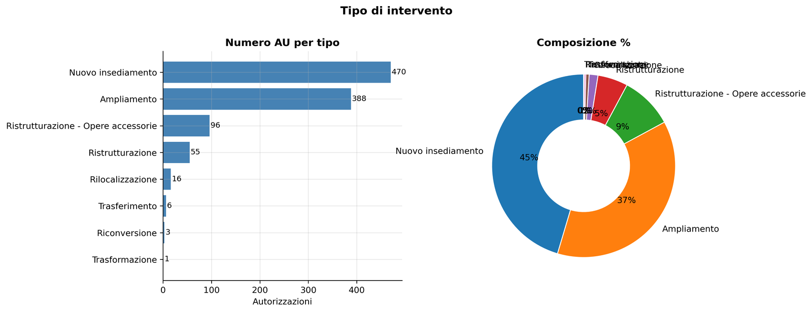
La distribuzione per tipo di intervento mostra una netta prevalenza di alcune categorie, che riflette la struttura dell’incentivo: il credito d’imposta ZES Unica è modulato per tipologia di investimento (macchinari, immobili, software, ecc.). La concentrazione su pochi tipi di intervento indica che le imprese tendono a ottimizzare la domanda verso le categorie con aliquota più favorevole o procedura più semplice. La composizione percentuale nella torta chiarisce il peso relativo: eventuali cambiamenti normativi sulle aliquote per tipologia potrebbero ridisegnare significativamente il mix. Questo grafico è utile anche per valutare la qualità del portafoglio: un’eccessiva concentrazione su investimenti immobiliari, ad esempio, solleverebbe domande sulla natura produttiva degli investimenti agevolati rispetto a quelli in beni strumentali.
1.6 Heatmap regione × tipo intervento
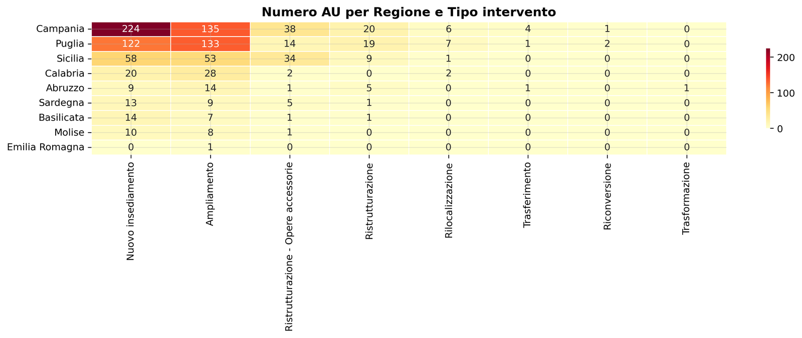
La heatmap incrocia le otto regioni della ZES Unica con le tipologie di intervento, permettendo di identificare specializzazioni territoriali. Campania e Puglia mostrano valori elevati in più categorie, mentre le regioni minori si concentrano su pochi tipi. Alcune celle vuote o con conteggi bassissimi segnalano combinazioni regione–intervento non utilizzate: può dipendere da caratteristiche strutturali del tessuto produttivo locale (assenza di certe industrie) oppure da difficoltà operative specifiche. La scala cromatica YlOrRd evidenzia le celle calde a colpo d’occhio.
Per un’analisi più raffinata occorrerebbe normalizzare per il numero di imprese attive per regione e settore, trasformando i conteggi assoluti in tassi di penetrazione dello strumento, che misurano l’effettiva capacità di attrazione dell’incentivo nei diversi territori.
1.7 Top 20 comuni
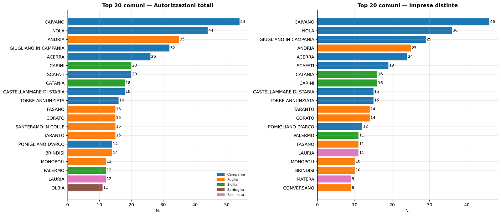
Il confronto tra i due pannelli — autorizzazioni totali vs imprese distinte — rivela la presenza di imprese multi-AU, ovvero soggetti che hanno presentato più domande per investimenti in comuni diversi o per fasi successive dello stesso progetto.
Quando un comune appare alto nel ranking per AU totali ma scende nel ranking per imprese distinte, significa che poche imprese concentrano molte autorizzazioni in quel territorio. Questo pattern può indicare grandi gruppi industriali con piani di investimento articolati, oppure imprese che frammentano un unico progetto in più pratiche. La colorazione per regione permette di leggere la distribuzione geografica interna: i comuni campani e pugliesi dominano entrambe le classifiche, mentre alcune aree industriali specifiche emergono con chiarezza come poli di attrazione dello strumento.
1.8 Pipeline: tempo di lavorazione e backlog stimato
Tempo di lavorazione (IN → AU rilasciata)
Mediana : 119 giorni (4.0 mesi)
Q25–Q75 : 75 – 178 giorni (2.5 – 5.9 mesi)
Media : 138 giorni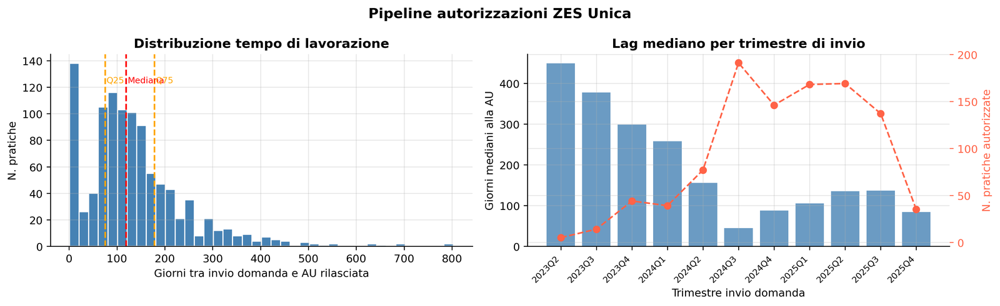
Backlog stimato al 2026-01-13:
Domande presentate (contatore): 2,824
AU rilasciate: 959
Tasso rifiuti ipotizzato: 5%
Pratiche in lavorazione (stima): 1,815Il pannello sinistro mostra la distribuzione dei tempi di lavorazione (giorni tra invio della domanda e rilascio dell’AU): la distribuzione è asimmetrica a destra, con una coda lunga che include pratiche rimaste in istruttoria per molti mesi.
Il pannello destro rivela il trend trimestrale: il lag mediano è cresciuto progressivamente da valori molto bassi nel 2024Q3 (boost iniziale: pratiche già pronte all’apertura dello sportello) fino a circa 173 giorni nel 2026Q1. Questo allungamento non è necessariamente patologico — potrebbe riflettere un mix di pratiche più complesse — ma in un sistema a capacità fissa e domanda crescente è esattamente il segnale atteso da un modello di coda saturata. Il numero di pratiche per trimestre (asse secondario) contestualizza la robustezza statistica di ogni punto.
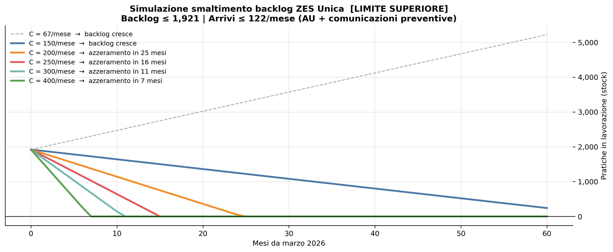
⚠️ Valori da interpretare come limite superiore (include comunicazioni preventive)
Capacità (AU/mese) Net vs arrivi Mesi ad azzeramento (limite sup.)
67 -55 ∞
150 28 ∞
200 78 25
250 128 16
300 178 11
400 278 7La simulazione confronta diversi scenari di capacità istruttoria (AU/mese) rispetto al tasso di arrivo stimato. Le curve con capacità inferiore agli arrivi (linee tratteggiate) mostrano un backlog crescente senza limite: il sistema non converge. Solo superando la soglia degli arrivi il backlog si azzera, in tempi che dipendono strettamente dal margine positivo (capacità − arrivi). Con la capacità attuale di circa 67 AU/mese il backlog cresce indefinitamente. Raddoppiare la capacità (134/mese) consentirebbe di raggiungere l’equilibrio in circa 28 mesi a partire da oggi. I valori vanno letti come limite superiore: il contatore include comunicazioni preventive che non necessariamente si trasformano in AU, quindi il backlog reale di sole AU è probabilmente più basso. Lo scenario più realistico è quello in cui la domanda stessa rallenta naturalmente (saturazione del mercato degli investimenti eleggibili) prima che il sistema raggiunga il pareggio per aumento di capacità.
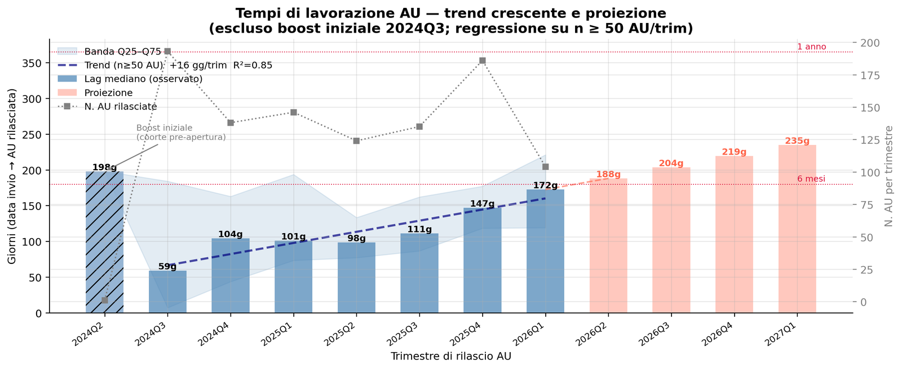
Trend (trimestri con n≥50): +16 gg/trim R²=0.85
Storico:
Trimestre AU Lag mediano (gg)
2024Q2 1 198.0
2024Q3 193 59.0
2024Q4 138 104.0
2025Q1 146 101.0
2025Q2 124 98.5
2025Q3 135 111.0
2025Q4 186 147.0
2026Q1 104 172.5
Proiezione (estrapolazione lineare):
2026Q2 → 188 gg (6.2 mesi)
2026Q3 → 204 gg (6.7 mesi)
2026Q4 → 219 gg (7.2 mesi)
2027Q1 → 235 gg (7.7 mesi)
NOTA: 2024Q2/Q3 esclusi dalla regressione (boost iniziale da domande in attesa
dell'apertura sportello ZES Unica, luglio 2024).Il grafico mostra il trend del lag mediano trimestrale con la proiezione lineare sui quattro trimestri successivi. Il 2024Q3 è esplicitamente escluso dalla regressione — identificato come coorte pre-apertura — e appare come barra grigia. La pendenza stimata è di alcune decine di giorni per trimestre: se confermata, porterebbe il lag mediano a superare i sei mesi entro fine 2026. L’asse secondario (numero di pratiche per trimestre) è fondamentale per valutare la robustezza di ogni punto: i trimestri con poche pratiche (n < 50) sono mostrati in grigio e non entrano nella regressione. La proiezione è meccanicamente lineare e non incorpora ipotesi sulla domanda futura o su eventuali potenziamenti della struttura istruttoria: va letta come scenario tendenziale a politiche invariate. Un’inversione del trend richiederebbe un aumento esplicito della capacità amministrativa.
Questo è il grafico più significativo. È l’unica analisi che:
Usa dati puliti e diretti — le nostre tabelle, non il contatore esterno con tutti i suoi problemi di qualità. Ogni punto è calcolato su AU effettivamente rilasciate con data IN nota.
Misura direttamente la performance amministrativa — non un proxy, non un’estrapolazione. Il lag IN→AU è esattamente quello che un’impresa sperimenta: quanto aspetta dall’invio alla risposta.
Ha un trend statisticamente robusto — la regressione sui trimestri con n≥50 pratiche è affidabile. La pendenza (+X giorni/trimestre) proiettata a fine 2026 porta il lag mediano oltre i 6 mesi.
È indipendente dalle ambiguità del contatore — non dipende dalla distinzione AU/comunicazioni preventive, non soffre del problema delle serie cumulate, non dipende da aggiornamenti a batch.
Ha l’implicazione di policy più netta: se il trend non si inverte, le imprese che presentano domanda oggi aspetteranno circa un anno per l’AU. Questo è il dato che dovrebbe guidare una decisione sull’organico istruttorio.
Il grafico M/M/1 è il più elegante analiticamente, ma dipende dal lag come input. Il flussi λ vs μ è il più intuitivo, ma dipende dal contatore. Il lag trend è la sorgente primaria da cui tutto il resto deriva.
1.9 ZES × Fondo di Garanzia
Incrocio dei CF delle aziende ZES con gli #opendata del Fondo di Garanzia
Domande: quante aziende ZES hanno anche una garanzia FdG?
La delibera FdG precede o segue la AU?
Qual è il profilo settoriale?
Aziende ZES totali: 837
con almeno 1 op. FdG: 581 (69.4%)
senza FdG: 256 (30.6%)
Garantito totale (FdG): €1,830 mln
Finanziamento totale (FdG): €2,384 mln
Sequenza temporale ultima delibera FdG → prima AU:
FdG precede AU: 358 (62%)
FdG segue AU: 223 (38%)
Contestuale ±6m: 174 (30%)
Mediana gap: 157 giorni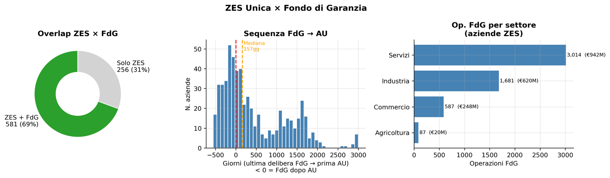
settore aziende op_fdg garantito_mln
Servizi 482 3014 941.6
Industria 288 1681 619.7
Commercio 141 587 248.3
Agricoltura 25 87 20.3L’incrocio ZES × FdG ha senso analitico solo se si restringe il confronto alle operazioni del Fondo di Garanzia che sono temporalmente prossime alla domanda o all’autorizzazione ZES: considerare tutto lo storico FdG di un’impresa introduce rumore — un finanziamento garantito dieci anni prima non ha relazione causale con l’investimento ZES.
La finestra temporale rilevante è quella attorno all’istanza AU: operazioni FdG deliberate nei 12–18 mesi precedenti o successivi alla data di protocollo possono ragionevolmente indicare che i due strumenti sono stati usati in modo coordinato per finanziare lo stesso progetto.
Il pannello sulla sequenza temporale (FdG precede / segue / contestuale all’AU) va letto in questa chiave:
se la garanzia precede l’AU, l’impresa ha già strutturato il finanziamento prima di ottenere il riconoscimento ZES, il che suggerisce un investimento pianificato indipendentemente dall’incentivo
se segue, l’AU può aver funzionato da catalizzatore per accedere al credito. Le operazioni FdG fuori da questa finestra temporale andrebbero escluse dall’analisi causale e trattate come caratteristiche strutturali dell’impresa, non come segnale di complementarietà tra i due strumenti.
Aziende ZES con bilancio: 584 su 837 (70%)
Media Mediana Max
Ricavi (migliaia €) 125,005 4,176 20,312,000
Dipendenti 361 15 90,088
Patrimonio netto (migliaia €) 190,526 1,756 61,821,000
Risultato operativo (migliaia €) 46,831 308 20,312,000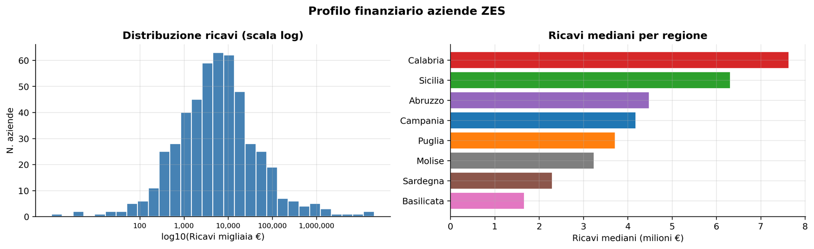
Il profilo finanziario ricostruito copre circa il 70% delle aziende ZES. Il pannello sinistro mostra la distribuzione dei ricavi in scala logaritmica: la forte asimmetria conferma che la platea è dominata da piccole e medie imprese, con poche grandi realtà nella coda destra. Il pannello destro mostra i ricavi mediani per regione: le differenze regionali sono contenute, segno che lo strumento raggiunge imprese di dimensione comparabile nelle diverse aree. La copertura incompleta (30% senza bilancio) è in parte strutturale — ditte individuali, società di persone e imprese esercitando in forma semplificata non depositano bilancio — e in parte dovuta a ritardi nel deposito.
Nota sui codici fiscali.
Su 1.035 autorizzazioni (837 CF distinti), tutti i codici sono nel formato italiano standard (11 cifre numeriche). Un unico CF risulta di 10 cifre per probabile errore di trascrizione nel PDF sorgente.
1.10 Profilo finanziario - (copertura estesa)
Aziende ZES totali: 837
Senza fatturato: 91 (11%)
Fatturato (€):
Mediana : 4,446,500
Media : 442,021,352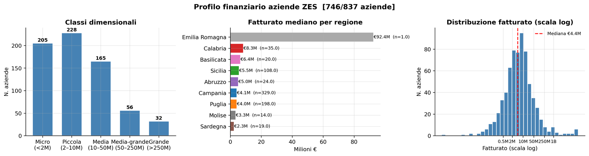
Il pannello sinistro mostra la distribuzione per classi dimensionali: la classe micro (sotto 2 milioni) è la più numerosa, seguita dalla piccola (2–10 milioni). Le imprese medio-grandi e grandi sono una minoranza assoluta ma concentrano la quota maggiore di investimento aggregato.
Il pannello centrale mostra il fatturato mediano per regione, con Campania e Sardegna ai poli opposti. Il pannello destro — distribuzione in scala log — evidenzia la forma bimodale tipica delle platee miste PMI/grandi imprese. L’ 11% residuo senza fatturato è strutturalmente irrecuperabile: include imprese neocostituite, holding pure e soggetti che non pubblicano bilancio in nessuna banca dati aperta.
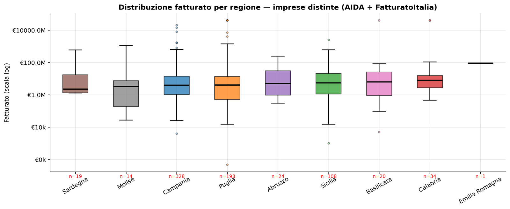
Totale imprese distinte con fatturato: 746Il boxplot in scala logaritmica mostra la distribuzione del fatturato per regione sulle 746 imprese distinte con dato disponibile. La mediana complessiva si attesta intorno a €4.4M, confermando un tessuto prevalentemente di piccole imprese. La scala log è necessaria perché la distribuzione è fortemente asimmetrica: senza di essa i pochi grandi outlier renderebbero illeggibile la parte centrale.
Le differenze regionali sono moderate ma leggibili.
Calabria e Basilicata mostrano mediane più alte (rispettivamente €8M e €6.4M), probabilmente per un mix settoriale diverso piuttosto che per una maggiore dimensione media delle imprese.
Campania e Puglia, le regioni più rappresentate, presentano distribuzioni ampie con code inferiori molto basse: molte micro imprese coesistono con alcune realtà grandi.
Sardegna e Molise, con campioni piccoli (n<20), mostrano bande interquartile molto larghe — la dispersione è reale ma la robustezza statistica è limitata.
La presenza di grandi gruppi nazionali (banche, utility, telecom, GDO) nella coda superiore distorce la lettura del profilo “produttivo” della ZES: un filtro ATECO che escluda i settori non industriali darebbe una rappresentazione più fedele della platea di investimento manifatturiero e dei servizi reali che lo strumento intende incentivare.
La tabella delle prime 30 imprese per fatturato rivela una caratteristica strutturale della platea ZES: la coda superiore è dominata da soggetti che non sono il target primario dello strumento. Gestore dei Mercati Energetici (GME), E-Distribuzione, Telecom Italia, Intesa Sanpaolo figurano tra le prime posizioni con fatturati miliardari, ma si tratta di grandi operatori di rete o istituti finanziari che hanno investito puntualmente in infrastrutture o sedi nel Mezzogiorno. Analogamente, soggetti come Stoneweg — operatore immobiliare — segnalano investimenti nel real estate che, pur eleggibili, non generano il tipo di addizionalità produttiva che lo strumento intende promuovere.
La colonna ATECO è lo strumento corretto per isolare il perimetro industriale: codici 64–66 (finanza), 68 (immobiliare), 35 (energia), 61 (telecomunicazioni) identificano i settori da trattare separatamente nell’analisi del profilo dimensionale.
La presenza di questi soggetti non inficia la validità dello strumento, ma distorce le statistiche aggregate di fatturato e dimensione se non filtrati.
1.11 Lettura entusiasta — la ZES Unica funziona
In meno di due anni dall’apertura dello sportello (luglio 2024) sono state rilasciate oltre 1.000 autorizzazioni a 837 imprese distinte distribuite su otto regioni del Mezzogiorno. Non è un numero simbolico: è la prova che lo strumento ha incontrato una domanda reale, strutturata, proveniente prevalentemente da piccole e medie imprese con fatturato mediano intorno ai 4 milioni di euro. Esattamente la platea che una politica industriale per il Sud dovrebbe raggiungere.
La crescita del backlog, che ai critici appare come una disfunzione, è in realtà la firma del successo: il sistema è congestionato perché le domande continuano ad arrivare. Un incentivo che non genera coda non genera domanda. Il fatto che il contatore superi 2.950 pratiche — con un tasso di arrivo che, pur rallentando, rimane superiore alla capacità attuale di istruzione — indica che le imprese meridionali stanno effettivamente programmando investimenti e si rivolgono allo sportello ZES come strumento abilitante.
L’analisi delle fonti finanziarie conferma il profilo industriale della platea: manifattura, costruzioni, logistica, agroalimentare. I grandi operatori nazionali (energia, telecom, real estate) sono una minoranza e non alterano la sostanza del portafoglio. La sovrapposizione con il Fondo di Garanzia MCC in prossimità delle AU è un ulteriore segnale di progettualità strutturata: le imprese non si fermano al credito d’imposta, lo usano come leva per attivare anche la garanzia pubblica sul credito bancario.
Il trend dei tempi di istruttoria — che cresce — va letto come un problema di risorse amministrative, non di progettazione dello strumento. La soluzione è investire sulla struttura istruttoria, non ridimensionare l’incentivo. Un sistema M/M/1 con ρ vicino a 1 si riequilibra aumentando μ, non comprimendo λ. La domanda c’è: serve la capacità per soddisfarla.
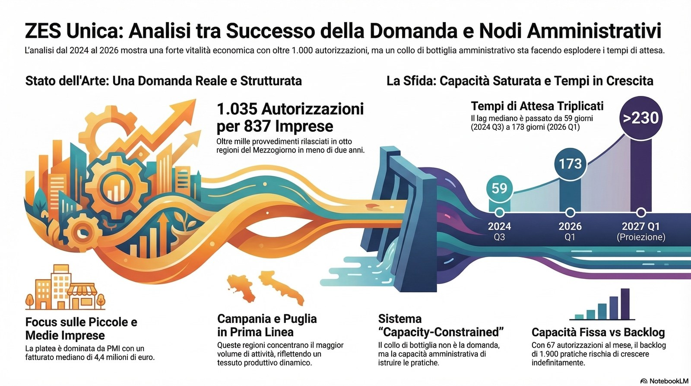
1.12 Lettura critica — la ZES Unica stenta
I numeri assoluti nascondono una disfunzione amministrativa profonda.
Il lag mediano tra invio della domanda e rilascio dell’autorizzazione è cresciuto da 59 giorni nel terzo trimestre 2024 a 173 giorni a inizio 2026, con una traiettoria lineare che lo porta a sfiorare gli otto mesi entro fine 2027. Un’impresa che oggi presenta domanda aspetterà oltre un semestre prima di sapere se può avviare l’investimento. In un contesto in cui le decisioni di capex hanno finestre temporali ristrette, questo ritardo non è un inconveniente burocratico: è un deterrente reale all’investimento.
Il sistema opera con un’utilization ratio ρ vicino a 1 — cioè è strutturalmente saturo. Questo significa che qualsiasi crescita della domanda non fa che allungare ulteriormente la coda, senza che nessuna pratica venga elaborata più velocemente. Il backlog stimato supera le 1.900 unità (limite superiore) e, con la capacità attuale di circa 67 AU al mese contro un tasso di arrivi superiore, non si azzera con le risorse esistenti. Non in anni ragionevoli.
La composizione del portafoglio solleva domande sull’addizionalità.
Tra i principali beneficiari figurano il Gestore dei Mercati Energetici, E-Distribuzione, Intesa Sanpaolo, Telecom Italia: soggetti che avrebbero investito nelle infrastrutture meridionali indipendentemente dall’incentivo, in quanto operatori di rete con obblighi di copertura territoriale.
Il rischio di deadweight loss — pagare per investimenti che sarebbero avvenuti comunque — è concreto e non misurabile con i dati disponibili.
La concentrazione geografica è un altro nodo: Campania e Puglia assorbono la quota dominante delle autorizzazioni, lasciando Molise, Basilicata e Sardegna in una posizione marginale. Una politica che si chiama “ZES Unica” ma produce una distribuzione fortemente asimmetrica riproduce, non riduce, le disuguaglianze territoriali interne al Mezzogiorno.
Infine, i dati del contatore ufficiale — l’unica misura della domanda aggregata — soffrono di problemi di qualità documentati: aggiornamenti a batch irregolari, impossibilità di separare AU da comunicazioni preventive, R² alto su serie cumulate. Analizzare questa politica con dati così grezzi espone a conclusioni fragili.
Pubblicato in origine su Substack l’8 marzo 2026.
Vedi anche
- ZES Unica — SardegnaAnalisi delle Autorizzazioni Uniche (AU) rilasciate dalla ZES Unica Mezzogiorno per la Sardegna, con riferimento al periodo agosto 2024–aprile 2026.
- Delocalizzare … al Mezzogiorno !Il punto del Governatore della Banca d’Italia sul Mezzogiorno nel discorso di Catania, con abstract e riassunto.
- Imprese in SiciliaImprese attive, nate e cessate in Sicilia per provincia e settore, dai dati Opendata Marche di InfoCamere.